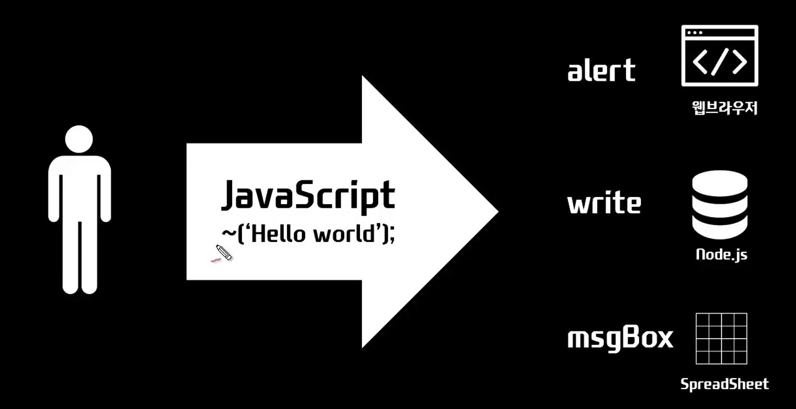
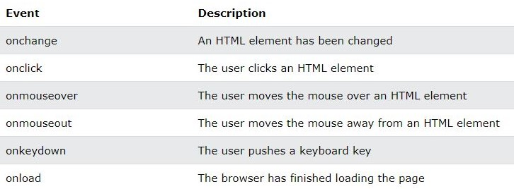
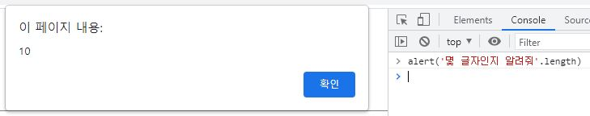
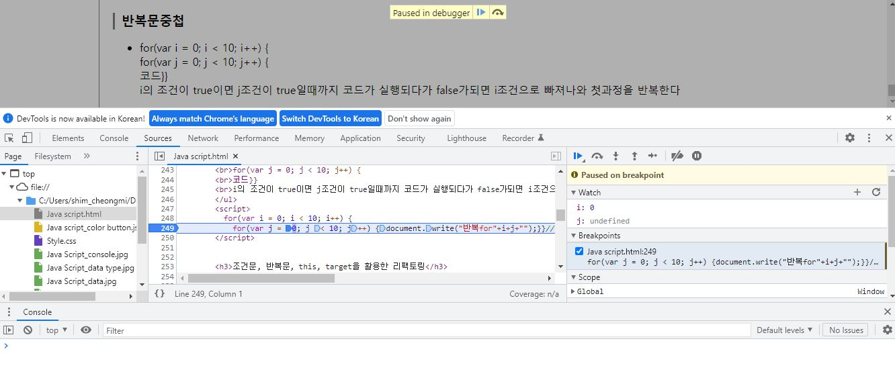
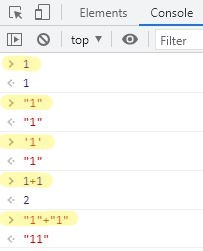
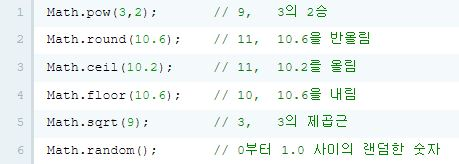
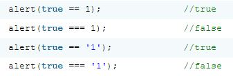
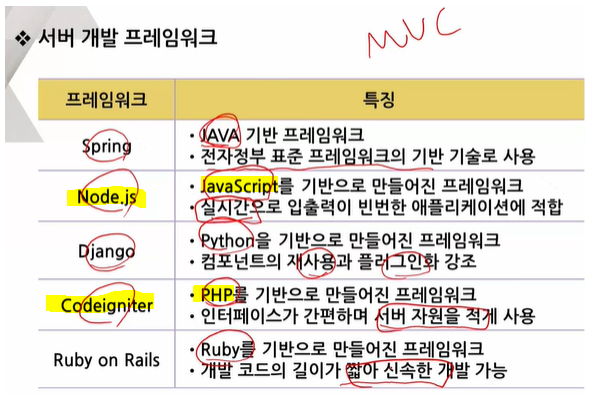
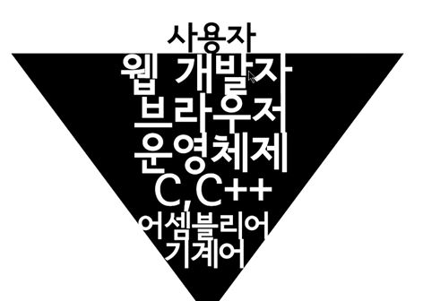

JavaScript : 사용자와 상호작용하는 언어

HTML에서 JavaScript실행방법
script 태그
JavaScript 문법을 HTML에 들여올때 script 태그를 이용한다.
이벤트 on~속성
input의 on~의 속성에 자바스크립트의 문법이 온다.

on속성을 이용한 버튼
콘솔 console
파일을 만들지 않고 웹상에서 바로 console 실행할수 있다. (마우스오른쪽 → 검사→ Elements→ ESC = console 분할화면)
*F12 크롬개발자도구 (설명페이지)

Error 확인법

- 개발자도구 접근법
- 구글 크롬 : (윈도우)Ctrl+Shift+J / (OSX)커멘트+Alt+J
디버거 : 개발자도구 → Sources → F5(새로고침) → breakpoint를 이용하여 디버그가능 - IE(IE9,10) : F12 → 개발자도구 → 콘솔탭
- 파이어폭스 : (윈도우)Ctrl+Shift+K
주석
- HTML < !-- -->
- CSS /* */
- JavaScript //한줄주석 /*범위주석*/
- C언어 //한줄주석 /*범위주석*/
데이터 타입
자바스트립트 데이터타입 종류 : https://developer.mozilla.org/ko/docs/Web/JavaScript/Data_structures

Boolean
참(true)과 거짓(false)
비교연산자와 조건문, 빈복문에서 쓰인다
Null과 Undefined
- Null은 값이 없는 것으로 의도적으로 정의한 상태
- Undefined은 값이 정의되지 않은 상태
- NaN은 0/0과 같은 연산의 결과로 만들어지는 특수한 데이터 형, 계산할 수 없는 연산
예시 null == undefined /
null === undefined /
숫자(Nunber)
- 자바스크립트에서는 큰따옴표(" ")나 작은따옴표(' ')가 붙지 않은 숫자는 숫자로 인식한다
- 데이터가 문자(string)인지 숫자(number)인지에 따라 결과값이 달라지므로 주의해야한다
 - 숫자 연산(math)

문자열(String)
- 문자는 " 혹은 ' 로 감싸야 한다. 숫자를 따옴표로 감싸면 문자가 된다
큰 따옴표로 시작하면 큰 따옴표로 끝나야하고, 작은 따옴표로 시작하면 작은 따옴표로 끝나야 한다. - 역슬래쉬\ 바로 뒤의 기호는 문자로 인식한다 (escape)
- write에서 줄바꿈(br) alert에서 줄바꿈(\n)
- 문자열 합칠때는 + 를 이용한다
- typeof는 값의 데이터 형을 알려주는 명령어이다.
연산
변수(var)와 대입연산자(=)
- 정의
- var 변수이름 = 상수값
- 변수(Variable)는 변할 수 있는 값을 담는 그릇과 같은 데이터 타입이다[좌항]
- = 는 대입연산자
- 상수는 변하지 않는 값 (1, 2..)[우항]
- 호출
- "+변수이름+"
예시 var a = 1; //처음 변수를 정의할 때는 반드시 var을 사용하여 정의해야하고, 그 이후에는 var을 생략할 수 있다
예시 var a = 'coding', b = 'everybody'; // , 로 변수를 여러개 정의할 수 있다 //변수의 이름은 특수 문자를 제외한 모든 문자로 시작할 수 있다
의문 : 만약 변수이름이 중복되어 쓰이면??
답 : var는 중복선언이 가능하며 호출하는 코드 기준 제일 마지막에 선언된 변수를 불러오는 듯하다. 이를 보완하기 위해 let이라는 명령어가 있고, 중복선언이 불가하다
비교연산자와 Boolean
비교연산자의 결과는 Boolean 값으로 나온다
- 비교연산자의 종류
- 동등과 일치 : == 대략같다 === 정확히같다 =는 대입연산자
- 부정 : !=값은같지않다 !==정확히같은값은아니다
- 부등호 : [<] [>] [<=] [>=]
- Boolean의 종류
- true
- flase
예시 1=='1' /
←엥간하면 사용하지 말것
1==='1' /
1!='1' /
1!=='1' /
1<2 /

참고로 비교연산자 ==에서 1을 true, 0을 false으로 간주한다
조건문과 반복문
조건문(Conditional statements) if
조건문이란 주어진 조건에 따라서 다르게 동작하도록 하는 것이다.
조건결과값은 Boolean(true/false)이 되어야 한다.if의 TRUE/FALSE 정리링크
- 조건문 종류
- if(조건) {내용}
조건결과값이 true일때 {내용}값을 동작하고, false일때 아무동작하지 않는다. - if(조건) {내용1} else {내용2}
조건결과값이 true일때 {내용1}값을 동작하고, false일때 {내용2}값을 동작한다. - if(조건1) {내용1} else if(조건2) {내용2} else {내용3}
조건1 결과값이 true일때 {내용1}값을 동작하고, false일때 조건2를 고려한다. 조건2가 true일때 {내용2}값을 동작하고, false일때 {내용3}값을 동작한다.
else if는 중첩이 가능하며, 가장 끝 else는 생략가능하다 생략시 조건전부 false일때 아무동작하지 않는다.
조건문_비교연산자
if(조건) {내용}에서 조건에 비교연산자가 오는 경우
당신의 나이는?
조건문_논리연산자
if(조건) {내용}에서 조건에 논리연산자가 오는 경우
- 논리연산자종류
- and연산자( && ) : 모두 참(true)일 때 참이된다. 여러개 중첩가능하다
if(조건1 && 조건2 && 조건3) {내용} - or연산자( || ) : 하나라도 true라면 true가 된다. 여러개 중첩가능하다
if(조건1 || 조건2 || 조건3) {내용} - not연산자( ! ) : 부정의 의미로, Boolean의 값을 역전시킨다. true를 false로 false를 true로 만든다.
응용예시 if( (조건1 || 조건2) && 조건3 ) && 와 || 를 혼용해서 쓸때는 ()를 사용한다
반복문(Loop) while,for
- 반복문 종류
- while(조건) {코드}
조건이 true인 동안 코드를 반복하고, false가 되면 멈춘다 - var i = 0; *관습적으로 반복문에선 index의 첫글자를 따서 변수 i를 쓰며, 0부터 카운팅한다
while (i < 숫자) {코드;
i = i + 1;} - for (초기화; 반복조건; 반복시조건코드세미콜론없이) {코드}
for (var i = 0; i < 숫자; i++) {코드}
i++ 는 i=i+1 와 같은 의미이다
i++ 는 기존의 i를 불러오고 1증가 시킴 / ++i 기존의 값에서 1증가 시킨 후 사용함
반복문제어
- Break
- for(var i = 0; i < 숫자; i++) { if(i===숫자){break;} 코드;}
break를 만나면 반복문 밖으로 나온다
- Continue
- for(var i = 0; i < 숫자; i++) { if(i===숫자){continue;} 코드;}
continue를 만나면 중지되었다가, 다시 반복문이 실행된다
반복문중첩
- for(var i = 0; i < 10; i++) {
for(var j = 0; j < 10; j++) {
코드}}
i의 조건이 true이면 j조건이 true일때까지 코드가 실행되다가 false가되면 i조건으로 빠져나와 첫과정을 반복한다
조건문, 반복문, this, target을 활용한 리팩토링
리팩토링(refactoring) : 중복을 줄여 코드를 효율적으로 다듬는 과정 (this, target, 조건문, 반복문, 함수, 객체 등)
함수(function)
함수(function)란 하나의 로직을 재실행 할 수 있도록 하는 데이터 타입이다.
재사용성.동일한 긴 코드를 한 줄의 코드로 불러오므로 경제적이고 유지보수가 쉬움
정확성.완전히 동일한 코드임을 바로 알아보기 쉽다
가독성.함수에 붙여진 이름을 통해 긴 코드의 용도를 유추하기 쉽다
함수에는 내장함수(elert과같은)와 사용자정의함수가 있다
- 함수정의와 호출
- 정의 : function 함수이름() {코드}
호출 : 함수이름(); - 정의 : function 함수이름(self) {코드}
호출 :함수이름(this); - 정의 :함수이름 = function () {코드}
호출 :함수이름(); - 익명함수_정의호출동시 :(function () {코드}) ();
함수의 입력과 출력
함수는 입력값에는 여러개의 매개변수를 넣고, 출력시에는 하나의 값만 나오는 구조이다
- 정의
- function 함수이름 (매개변수) { return 변환내용 }
- 호출
- 함수이름 (인자);
- 입력
- 매개변수(parameter)와 인자(argument)
인자(argument)는 함수로 유입되는 입력 값, 어떤 값을 인자로 전달하느냐에 따라서 함수가 반환하는 값이나 메소드의 동작방법을 다르게 할 수 있다.
매개변수는 인자가 유입되는 위치를 지정해준다.
- 출력
- 리턴(return)
함수 내에서 return 뒤에 따라오는 값을 함수의 결과로 반환한다.
동시에 함수를 종료시키므로 리턴코드; 다음에 오는 코드는 동작하지 않는다
함수를 활용한 리팩토링
배열(Array) [ ]
배열(array)이란 연관된 데이터를 모아서 관리하기 위해서 사용하는 데이터 타입이다. 변수(var)는 하나의 변수에 하나의 데이터를 저장하고, 배열은 하나의 변수에 여러개의 데이터를 저장한다.
- 정의
- 기본형 : var 배열이름 = ['원소0','Element1','Element2'];
- 함수응용 : function 함수이름() {return ['원소0','Element1','Element2'];} / var 변수이름 = 함수이름
- 호출
- 전체호출 : 배열이름
- 특정호출 : 배열이름[i] *index(색인)은 0부터 카운팅
배열편집
배열에 Method를 결합할때는 배열이름.Method 혹은 배열이름[i].Method 형태를 사용한다
- 추가
- 끝에 한개추가 : array.push('값');
- 끝에 복수추가 : array.concat(['값1','값2');
- 앞에 한개추가 : array.unshift('값1');
- 중간에 추가 : array.splice(추가할위치색인,앞색인부터삭제할원소수,추가할값);
- 제거
- 첫번째원소제거 : array.shift();
- 끝원소제거 : array.pop();
- 정렬
- 크기갯수 : array.length();
- 일반정렬 : array.sort();
- 역순정렬 : array.reverse();
- 사용자지정 정렬 : array.sort(function);
배열과 반복문
배열의 진가는 반복문과 결합했을 때 나타난다. 반복문으로 리스트에 담긴 정보를 하나씩 꺼내서 처리 할 수 있기 때문이다.
객체(Object) { }
연관된 복수의 데이터를 관리하는 데이터타입 변수는 배열과 객체가 있다.
배열은 index로 자동, 순서대로, 숫자가 부여되고
객체는 key로 수기, 순서없이, 문자를 부여할 수 있다.
객체와 같은 개념의 다른언어 데이터 타입 : 연관배열(associative array)_PHP, 맵(map)_JAVA, 딕셔너리(Dictionary)_Python
- 정의
- var 객체이름 = {"key1":"value1" , "key2":"value2"};
- var 객체이름 = {};
객체이름['key1'] = 'value1';
객체이름['key2'] = 'value2'; - var 객체이름 = new Object();
객체이름['key1'] = 'value1';
객체이름['key2'] = 'value2';
- 접근
- 객체이름.key
- 객체이름['key']
- 객체이름['ke'+'y'] 문자열결합가능 *객체이름.'ke'+'y'은 SyntaxError
- *전체호출은 반복문을 통해서한다
- 추가
- 객체이름.key = 'value';
- 객체이름['key'] = 'value';
객체의 value
객체의 value로는 문자뿐 아니라 다양한 데이터가 올 수 있다.
객체안에 객체를 담을 수도 있다. 객체안에 함수를 담을 수도 있다.
객체반복문(Iterate)
객체안의 모든값을 순회하여 열거하는 기능
- for in 문
- for(var key in 객체이름) { document.write(key); } *모든key 불러오기
- for(var key in 객체이름) { document.write(객체이름[key]); } *모든value 불러오기
- *배열도 동일한 형식으로 사용가능하며 key란을 아무글자로 바꿔도 동작한다
객체지향(Property & Method)
객체안에 함수를 담았을때
Method = 객체에 소속된 함수 / Property = 객체의 변수(key값)
객체안 함수의 this는 객체를 가리킨다
- 정의
- var 객체이름 = { Property : function(변수){코드} }
- 객체이름.Property = function(변수){코드}
- 호출
- 객체이름.Property();
객체를 활용한 리팩토링
모듈(module)
코드를 부품과 같이 여러개의 파일로 분리하여 생산성을 높이는 것
순수 JavaScript에서는 모듈(module)이라는 개념이 분명하게 존재하지 않으나, 호스트 환경(구동되는 환경)에 따라서 다른 모듈화 방법이 제공된다.
- JavaScript와 호스트
- 언어: JavaScript - 호스트환경: 웹브라우저(클라이언트)
- 언어: node.js - 호스트환경: 서버
- 언어: google apps script - 호스트환경: 구글제품
웹 모듈화 방법 : js파일을 만든 뒤 /script src="파일이름.js" 로 불러올 수 있다
라이브러리(livrary)
livrary는 부품조립집합
대표적인 JavaScript의 livrary로는 jQuery가 있다
CDN을 이용하면 livrary파일을 다운받지않고 로딩할 수 있다
livrary를 로딩하는 script src태그는 livrary변수($)를 사용하는 코드보다 앞에 위치하도록 둔다.
프레임워크(framework)
framework는 반제품

정규표현식(regular expression)
문자열에서 특정한 문자를 검색,치환,추출하는 도구
정규표현식은 하나의 방대한 언어라고 할 수 있다. JavaScript에서는 정규표현식을 어떻게 사용하는가를 알아보자.
정규표현식_컴파일(compile)
컴파일은 검출하고자 하는 패턴을 만드는 일이다. 즉 정규표현식 객체를 생성하는 것
- 패턴을 만드는 방식
- 정규표현식 리터럴 var pattern = /표현/옵션
- 정규표현식 객체생성자 var pattern = new RegExp('표현','옵션');
정규표현식_옵션(i,g)
생성된 객체에 옵션을 추가 할 수 있다.
- 옵션
- i옵션을 추가하면 대소문자를 구분하지 않는다. var pattern = /표현/i;
- g옵션을 추가하면 검색된 모든 결과를 리턴한다. var pattern = /표현/g;
*g를 추가하지 않으면 처음 검색된 결과만 리턴한다 - i와 g옵션은 중복사용 가능하다 var pattern = /표현/ig;
정규표현식_실행(execution)
생성한 정규표현식 객체를 실행하는 여러방식이 있다.
- 실행(execution)
- 추출(execution) pattern.exec("문자열"); → ["표현"] / null
- match "문자열".match(pattern); → ["표현"] / null
- 존재유무(test) pattern.test("문자열"); → true / false
- 치환(replace) "문자열".replace(pattern, "치환할표현");
정규표현식_캡쳐
표현에 여러 기호를 사용하여 구조를 만들 수 있다
- 캡쳐 표현 기호
- () : 그룹
- \w : a-z,A-Z,0-9
- \s : 공백
- + : 1개이상
- $숫자 : n번째그룹을의미
var pattern = /(\w+)\s(\w+)/;
var test = "coding everybody";
var result = test.replace(pattern, "$2 $1");
console.log(result); →everybody coding
정규표현식_치환예제
"문자열".replace(pattern, "치환할표현");
var URLPattern = /\b(?:https?):\/\/[a-z0-9-+&@#\/%?=~_|!:,.;]*/gim;
var URL예문 = '생활코딩 : http://opentutorials.org/course/1 입니다. 네이버 : http://naver.com 입니다. ';
var 치환결과 = URL예문.replace(URLPattern, function(url){return "<\a href='"+url+"'>"+url+"<\ /a>";});
console.log(치환결과);
생활코딩 : <\a href='http://opentutorials.org/course/1'>http://opentutorials.org/course/1<\ /a> 입니다. 네이버 :
<\a href='http://naver.com'>http://naver.com<\ /a> 입니다.
UI 와 API
- UI (User Interface)
- 사용자를 위한 조작장치
키보드나 웹브라우저 버튼처럼 사용자가 원하는 바를 시스템에 전달할 수 있는장치
- API (Application Programming Interface)
- 프로그래밍을 위한 조작장치
alert과 같이 내장된 기능을 가진 코드들이 Interface이다. 개발자는 API를 사용한다.
그럼 alert은 누가 만들까? 개발자는 층이 있고 각 층에 기반으로 제공되는 것이 Interface이다

튜토리얼(Tutorial)
언어의 기본적인 문법을 설명하는 안내서
레퍼런스(Reference)
명령어사전 즉 API사전
- JavaScript 공통 Reference
- ECMAScript(표준문서) →독학하기 어려움
- 자바스크립트 사전(생활코딩) →MDN참고로 만듬
- mozilla JavaScript Reference(MDN)
- microsoft jScript Reference(MSDN)
- 호스트 환경에 따른 Reference
- 웹브라우저 API
- Node.js API
- Google AppsScript API